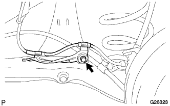
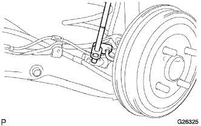
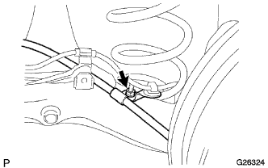
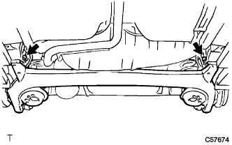
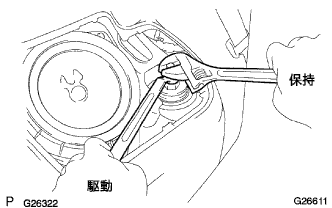
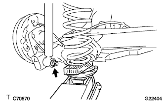
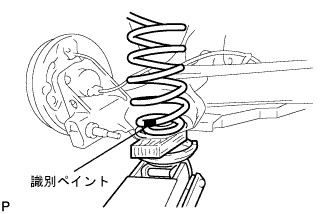

Rear coil spring LH removal |
| 1. Remove the rear bosorver cap |
| 2. Remove the rear tire |
| 3. Skid control sensor wire cut off |
Cut the connector from the rear axle hub.
|  |
Remove the bolt and separate the skid control sensor wires from the rear axle beam asser.
| 4. Rear brake tube No.4 cut off |
|  |
Use a union nut wrench to separate the brake tube.
Remove the clip.
| 5. Rear brake tube No.3 separation |
| 6. Parking brake cable ASSY No.3 Cut off |
|  |
Remove the nut and disconnect the parking brake cable asSy No.3 from the rear axle beam asser.
| 7. Parking brake cable ASSY No.2 Cut off |
| 8. Rear Axle Beam ASSY loosening |
|  |
Loan two bolts of the rear axle beam ASSY.
| 9. Shock absorber ASSY RR LH separation |
|  |
Fix the two -sided width of the rear shock absorber ASSY LH and loosen the two nuts.
|  |
Support the rear axle beam with a jack via a piece of wood.
Remove the nut and the rear shock absorbaspaca, and separate the rear shock absorber ASSY LH (Lower side) from the rear axle beam ASSY.
| 10. Shock absorber ASSY RR RH is removed |
| 11. Coil spring RR LH removed |
|  |
When reusing the rear coil spring LH, check if the identification paint is attached, and if it is gone, attach the identification paint to the lower side of the vehicle and the rear of the vehicle.
Gradually lower the jack and remove the rear coil spring LH.
Remove the rear coil spring insulator UPR LH and rear coil spring insulator LWR LH.
| 12. Coil spring RR RH is removed |